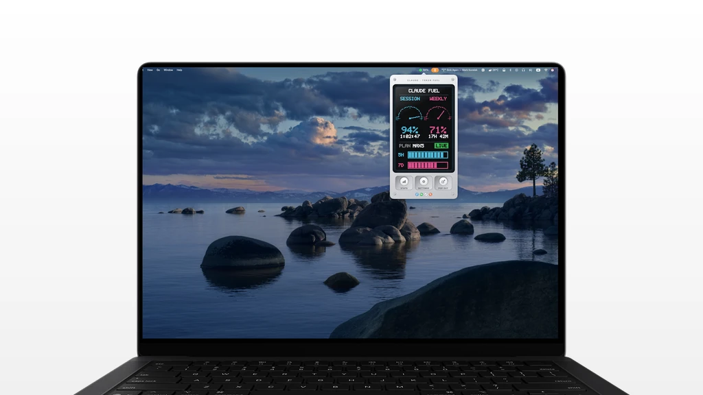
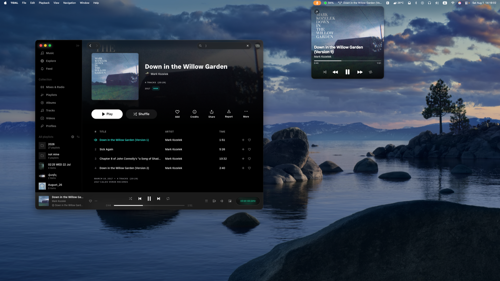
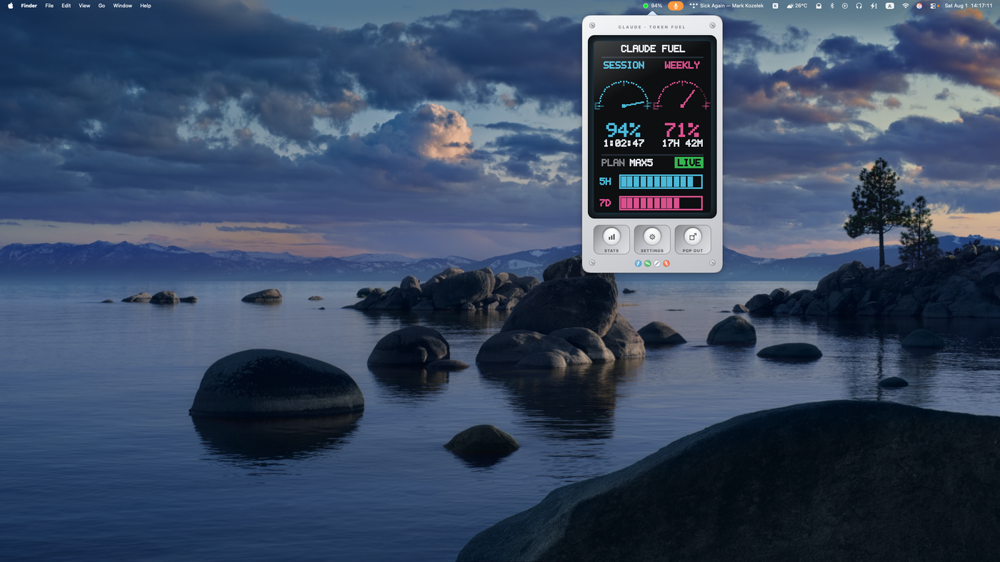
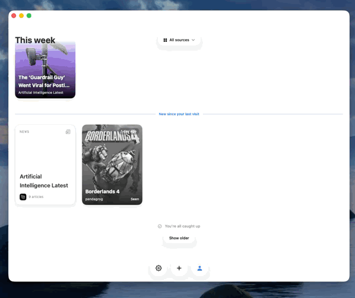

Designing by building. I'm convinced vibe coding is where product design is heading, so I prototype and ship in code.
Prototyping in code closes the gap between design and product: faster validation, higher-fidelity decisions, and a real feel for constraints. This is a living collection of things I've designed and built myself, starting with this very portfolio, and the apps below.
Tidal Mini Player
A macOS menu-bar mini player for the TIDAL desktop app, written in Swift (SwiftUI + AppKit). It sits in the menu bar with the current track, and clicks open into a compact player styled after TIDAL's own: full-bleed album art with the title, artist, a live progress bar, and previous / play-pause / next controls overlaid on top.

The floating panel mirrors TIDAL's own mini player: the exact album art, live position, and real transport controls, always in reach.
Claude Fuel
A skeuomorphic macOS menu-bar app that shows your Claude token consumption as a retro fuel gauge: a machined-metal "beeper" with a pixelated dot-matrix LCD. It reads your local Claude Code usage straight from the CLI's transcripts, so there's no login and no API key. Your remaining fuel shows right in the menu bar, readable at a glance without opening the app.

Session and weekly gauges sweeping E → F, the big percent remaining, the reset countdown, and segmented fuel bars: usage turned into something you actually want to glance at.
Reed
A macOS reader that pulls everything I follow into one quiet feed (RSS, YouTube, Are.na and Backloggd side by side) and groups it by when it landed: this week, last week, two weeks ago. What you follow lives in a shareable profile: a single code you can hand to someone so they get your sources in a tap.

One feed for everything you follow: grouped by time, read in place, and shareable as a profile. Shown at 2× speed.